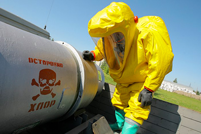

[Вернуться на главную страницу]
Провода и Кабели. Эволюция или Экология?
За окном 2015-ый год так называемой «Нашей Эры», и каждый год этой самой Эры приносит нам что-то новое. За недавний десяток лет мы уже успели привыкнуть к тому, что каждый новый год радует нас новыми приборами, использующими для своего функционирования так называемый «электрический ток». Машины, механизмы и приборы современного человека стали меньше размерами, умнее и быстрее по сравнению с таковыми вековой давности. В приборах появилось множество ранее невиданных вещей, перечислять которые можно часами, но при всём этом наши многочисленные механические помощники пока ещё содержат в себе отдельно-стоящие, или лучше сказать, отдельно проложенные, провода, кабели, шнуры, или по-научному — проводники электрического тока. Речь в данном коротком повествовании пойдёт про развитие этих самых проводников, а точнее — материалов, используемых в проводниках. Упор сделан на материалы изоляции, поскольку именно эта часть проводника определяет его срок жизни, надёжность и защищённость.
Само понятие и слово «Кабель», вероятно, имеет немецкие, германские корни, потому как в более древних языках это слово не встречается. Аналогом немецкого «Kabel» является русский «Провод» — смысл этого слова нам понятен яснее, ибо что такое «проводить» и кто такой «проводник» мы можем догадаться без труда. Теперь, когда мы определили понятия, можно перейти к истории этого самого «Провода». Залезать в историю глубоко до времён опытов с «электричеством» не станем. Ограничимся лишь временами появления в России первых производств проводников.
21-го числа октября месяца 1832-го года Павел Львович Шиллинг установил в Петербурге, при помощи механика И. А. Швейкина, первый в истории электромагнитный телеграф. Для работы телеграфа нужны были надёжные проводники электрического тока. Первый подводный электрический кабель представлял собой тонкую проволоку, покрытую двумя слоями изоляции, шёлком и пенькой, причем первый слой (шелк) пропитывался специальным смолистым составом, на который затем навивалась пенька, и всё снова пропитывалось тем же смолистым составом. Таким образом, можно сказать, что первые в России провода были, за исключением токо-проводящей жилы, вполне экологически чистыми, сделанными из натуральных продуктов (шёлк, смола, пенька).
Первые подземные телеграфные кабели изготавливались примерно таким способом: провода изолировались одним или двумя слоями хлопчатобумажной пряжи с последующей пропиткой её специальными составами (например, из воска, сала и канифоли). Защитной оболочкой служили стеклянные трубки, соединенные резиновыми муфтами, или стальные гильзы; в отдельных случаях стеклянные трубки закладывались в деревянные желоба (при подземной прокладке). Для воздушных линий связи и первых электропередач применяли изоляторы из очень чистых с экологической точки зрения материалов — стекла и фарфора.
В начале 40-ых годов XIX века в связи с необходимостью изготовления большого количества изолированных проводников создаются специальные машины для обвивки проводов пряжей. В эти же годы в качестве изоляционных материалов начинают применяться резина и гуттаперча, которая в воде хорошо сохраняла свои свойства. Каучук был известен давно, но его способность сильно изменять свойства при незначительных изменениях температуры препятствовала применению его для целей изоляции. Только после внедрения в 1939-ом году метода вулканизации каучук приобрел те свойства, которыми обладает материал, хорошо известный нам как «резина».
Таким образом, использование проводов в подземных и массовых условиях стало толчком к усложнению конструкции изоляции и оболочки кабеля — входят в употребление такие материалы, как стекло и резина. Если стекло ещё можно назвать экологически чистым материалом (оно химически стойкое, легко перерабатываемое, при горении не токсично, да и вообще нормальный человек его поджечь не сможет), то резину назвать чистым материалом уже сложно. Мало того, что производство резины использует серу, так ещё и в течение всего периода своего использования резина источает ужасные и явно не экологически чистые запахи.
Быстрое увеличение протяженности подводных и подземных телеграфных линий предъявляло все более серьезные требования к улучшению качества изоляции. Существенным шагом на пути решения этой проблемы явилось изобретение в 1848-ом году пресса для бесшовного наложения резиновой и гуттаперчевой изоляции на медные жилы. Но ещё более важно было создать специальные покровные материалы, которые усиливали бы механическую прочность изоляции (в частности, резины и гуттаперчи) при сохранении её гибкости и эластичности. Эта задача была решена построением в 1879-ом году свинцового пресса, с помощью которого изолированный провод покрывался бесшовной свинцовой оболочкой.
В начале 50-ых годов впервые был получен эбонит, используемый при изготовлении различных электрических приборов и устройств. Эбонит (от древне-греческого «ἔβενος» — чёрное дерево) — высоко-вулканизированный каучук с большим содержанием серы (30—50 % в расчёте на массу каучука), обычно тёмно-бурого или чёрного цвета; химически инертен, имеет высокие электроизоляционные свойства, однако те, у кого ещё сохранились с Советских времён столовые приборы с эбонитовыми ручками и кто их случайно перегревал, должны помнить какой ужасный запах выделяет эбонит при попадании в пламя огня.
В 1878-ом году инженер-технолог Максим Михайлович Подобедов организовал в России на Васильевском острове города Санкт-Петербург первые кустарные мастерские для выработки проводников с шёлковой и хлопчатобумажной изоляцией, на которых работало несколько человек. Там же им было создано небольшое предприятие «Русское производство изолированных проводников электричества Подобедовых, Лебурде и Ко».
В 90-ых годах девятнадцатого века всё большее применение для силовых кабелей начинает получать многослойная пропитанная маслом бумажная изоляция.
О материале токо-проводящих жил или жилы для первых в России проводников информации в интернете найти не смог, но смею предположить, что медь и алюминий были в то время диковинными вещами и сталь должна была быть гораздо более дешёвым и, главное, более доступным и используемым материалом. В целом, сегодня, в начале двадцать первого века, в качестве проводника чаще всего используют такой материал как медь. Другими используемыми материалами являются алюминий, сталь, иногда золото, серебро, и в редких особенных случаях сверхпроводящие материалы. Некоторые материалы используют в проводниках не по прямому назначению (например, для рассеивания тепла): нихром, константан и другие.
По той причине, что материалы токо-проводящей жилы вот уже на протяжении более чем ста лет остаются неизменными (ничего практичней меди пока не придумали), главный «прогресс», если его можно так назвать, происходит в материалах и строении изоляции жилы и внешней оболочки провода-кабеля. За двадцатый век эта часть провода изменилась очень сильно и, на мой взгляд, не в лучшую сторону, если судить по заботе об окружающей среде нашей Природы. Остановимся на изоляции и оболочке провода подробнее.
 После эры экспериментов с натуральным шёлком, пенькой, различными смолами, специальной кабельной (электро-изоляционной) бумагой, деревом, керамикой, стеклом и даже хлопчато-бумажной тканью, наступила эпоха откровенно наплевательского на Природу отношения. Даже резина по сравнению с некоторыми современными материалами может показаться маленькой безобидной овечкой на фоне стаи кровожадных волков.
Главный из таких волков — это Поли-Винил-Хлорид, сокращённо — ПВХ по-русски или PVC по-английски. Производство ПВХ в крупных масштабах началось в 30-ые годы двадцатого века в Германии, в 1931-ом году концерном «BASF» были выпущены первые тонны этого материала. В это же время успешные разработки в этой области были проведены в Соединённых Штатах Америки и Англии. После окончания Второй мировой войны Поли-Винил-Хлорид стал самым массовым материалом для изготовления труб, профилей, покрытий для пола, пленок, кабельной изоляции и множества других пластмассовых изделий! Обычно этот факт преподносится рекламными агентами пластиковых окон в качестве достоинства материала. Кто бы мог подумать, но да (!), пластиковые окна делают именно из ПВХ! Давайте подумаем, так ли хорош этот ПВХ?
Химическая формула ПВХ: [-CH2-CHCl-]n. ПВХ, как ясно из названия, содержит в себе Хлор. ПВХ относят к группе термо-пластов, чистый ПВХ — это порошок, который на 43% состоит из этилена (продукта нефтехимии) и на 57% из связанного хлора. Температура плавления ПВХ составляет 150 – 220°C, однако при нагревании свыше 135 °С в нем начинаются процессы деструкции, сопровождающиеся отщеплением атомарного хлора с последующим образованием хлористого водорода, вызывающего интенсивную деструкцию макро-цепей. Деформироваться ПВХ начинает при уже 65 – 70 °С! Если покопаться в истории химического оружия, то можно найти тот факт, что химические виды оружия очень часто использовали в своём составе хлор. Выводы о том, похож ли ПВХ на бомбу замедленного действия и почему западные страны активно продвигают изделия из ПВХ по всей планете, предлагаю сделать вам самим.
Основной официальной проблемой, связанной с использованием ПВХ, является сложность его утилизации — при его неполном сгорании образуются высокотоксичные хлорорганические соединения, например отравляющее вещество фосген и диоксины, являющиеся канцерогенами. ПВХ является наиболее опасным пластиком, производимым на сегодняшний день. Несмотря на его опасность, некоторые люди, не зная о ней, нагревают и жгут вещи, содержащие в себе ПВХ. Делать это в закрытых помещениях не то чтобы крайне опасно — а вообще категорически запрещено, если хотите жить!
Данная статья не ставит целью указать, сколько вредных вещей из ПВХ нас окружают в обыденной жизни (а их очень и очень много!), акцент эта статья делает на тот факт, что в большинстве производимых сегодня проводов и кабелей в качестве изолятора и оболочки провода использован именно ядовитый Поли-Винил-Хлорид. Если представить, в скольких приборах есть электрические провода, и что все эти провода сделаны из ПВХ, то лучше не думать, что будет с хозяевами всей этой «техники замедленного действия», когда она нагреется до высокой температуры. А ведь она и вправду часто греется. Не замечали? Лучше заметьте. Для ориентира — 60 градусов по шкале Цельсия — это болевой порог кожи средне-статистического человека. Если провод из ПВХ проложен рядом с горячими поверхностями, лучше его оттуда убрать или заменить на провод, сделанный из других материалов, о которых будет упомянуто ниже.
Материалы ПВХ продвигаются на рынок под видом заботы о нас, они якобы пожаро-безопаснее других. Однако, если посмотреть на виды кабелей, то можно заметить, что среди ПВХ-кабелей полно кабелей из простых ПВХ-пластикатов, для которых не указано, что он мало-дымный или не распространяет горение. Значит, ПВХ-то не панацея от всех бед? Пожаро-стойкость гораздо проще было бы обеспечить металлическими оболочками и корпусами, керамическими и стеклянными вставками, да много ещё чем, нежели химическим оружием в проводах! Пожаро-безопасность — это лишь повод, а не настоящая причина!
Экзотические виды изоляции и оболочки типа шёлковой, думаю, можно пропустить, ибо сейчас чисто-натуральные провода никто давно уже не делает. Ну разве что какой-нибудь кулибин дядя Вася в гараже у себя на голую медную проволоку наматывает шёлковые шарфики, что очень маловероятно :-) Предлагаю окунуться в небольшое исследование рынка доступных сегодня альтернатив вредным проводам из ПВХ. Мини-исследование проведено мною в начале февраля месяца 2015-го года с помощью просмотра популярных магазинов оптовых и розничных продавцов кабельной продукции в Российской Федерации.
Для монтажа мелких деталей внутри приборов очень удобен провод (далее я всю кабельную продукцию буду называть просто словом «провод», пусть технари меня простят, но я любитель русского языка) типа МПМ и МПО. Судя по техническим характеристикам, они вполне способны заменить тучу ПВХ-хлама в современных приборах по следующим причинам:
1. Изоляция-оболочка сделана из Поли-Этилена (ПЭ), о нём скажу ниже;
2. Наличие разных расцветок и размеров (что важно некоторым современным сборщикам, но было абсолютно неважно ещё сто лет назад).
Поли-Этилен (ПЭ) не содержит хлора, имеет самую простую химическую формулу из всех пластмасс, известных нашей промышленности, и является самым безопасным из известных пластиков сего дня. Да, конечно, при горении даже ПЭ будет дымить гадкой химией, но эта химия будет гораздо менее токсичной нежели ПВХ — у вас будет шанс в случае пожара выбежать и не помереть через несколько дней от отравления, как это случилось с посетителями клуба «Хромая Лошадь», большая часть которых умерла не от ожогов, а от отравления продуктами горения Пено-Поли-Стирола (ППС).
Температура деструкции ПЭ составляет примерно 80 градусов по Цельсию. Температура плавления — 120 градусов, ниже чем 150 градусов у ПВХ, но зато больше шансов выжить :-)
Провод МПО по сравнению с проводом МПМ имеет более толстый слой изоляции. По всем остальным параметрам эти два провода одинаковы.
Однако, найти этот провод в свободной продаже (для простых смертных, а не юридических лиц с оптовыми объёмами закупок) мне не удалось. Вот какие альтернативы МПО и МПМ я нашёл.
Начнём со «слабеньких» проводков, типа телефонных.
1. Провод «ТРП». Имеет 2 медных жилы, изоляция из прозрачного или цветного ПЭ. Вполне подойдёт для целей монтажа, если нужна площадь сечения 0,4 или 0,5 квадратных миллиметров (кв. мм.). Если нужен один провод, можно разделить (разрезать) пару вдоль.
2. Провод «ПРППМ». Так же имеет 2 жилы, так же можно его располовинивать при желании. Цвет только чёрный. Зато всё из Поли-Этилена.
3. Провод «П-274М», используется для полевой связи. 2 жилы по 0,5 кв. мм. Так же всё из ПЭ. Цвет чёрный. Каждая из двух жил содержит 3 стальные жилки и по 4 медные жилки.
Далее идёт специфический кабель для ретрансляции, но при неимении ничего другого его так же можно приспособить куда-нибудь.
4. Провод «ПТПЖ». Две жилы, прозрачный, опять же, всё из ПЭ. Жилы из оцинкованной стали. Может подойти так же и для тех, целей, где важна прозрачная оболочка.
Далее — силовые кабели, подойдут для бытовой сети с переменным напряжением 220 вольт.
5. Провод «ВПП». Одна жила, чёрный, ПЭ, номинальное переменное напряжение — до 380 В.
6. Провод «ПРКА». Одна жила, номинальное переменное напряжение — до 660 В; изоляция из Кремний-Органической-Резины (Силикон) повышенной твёрдости. Температура эксплуатации: от -60 C° до +180 C° (термостойкий)! Идеальный выбор для замены во всех наших бытовых 220-вольтовых проводах. И стоит он дёшево (1 метр с 1 жилой сечением 1,5 кв. мм. стоит около 13 рублей сегодня). Почему из него с самого начала не делали вещей? Загадка...
7. Провод «ПВКВ». Одна жила, опять 660 вольт переменки, так же из Кремний-Органической-Резины (Силикон) повышенной твёрдости, так же термостойкий до 180 градусов Цельсия, хорошая цена.
8. Провод «РКГМ». 1 жила, 660 вольт переменки, термостойкий (до +180 градусов), изоляция из Кремний-Органической-Резины (Силикон), оплётка (внешняя оболочка) из стекловолокна (!), пропитанного нагревостойким лаком.
Ну и напоследок, провод для любителей экстрима.
9. Провод «Энерготерм-400». Изоляция из слюдо-содержащих термостойких лент, обмотка стеклолентами, до 660 вольт переменки. Температура эксплуатации: от -60° C до +400° C! Цена, правда, соответствующая.
Итак, проведя краткий экскурс в историю материалов, связанных с электрическими проводниками, мы можем ясно видеть, куда и из-за кого катится этот мир. Полиэтиленовые провода можно использовать в «лёгких» приборах, где риск пожара почти невозможен (например, манипулятор типа мышь, клавиатура и прочие). В других приборах можно использовать силиконовые термостойкие изоляторы! Даже если и этого будет недостаточно, можно сделать улучшение конструкции приборов — использовать дополнительные металлические, керамические или стеклянные экраны, оболочки и кожухи. Да, вес приборов будет явно больше, но экологичность возрастёт в разы. Желаю нашей промышленности и нашему правительству поскорее это осознать и понять, что нужно делать.
[2015 год Нашей Эры, Февраль месяц]
[Вернуться на главную страницу]